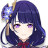

La caballera de la Marea, procedente de una familia con una gran linaje y Capitana del Equipo de Reconocimiento de los Caballeros De Favonius.
Artefacto/s recomendados

Atq%

Bono fisico

Prob / Daño critico
Prob/Daño critico > Atq% > Energia%
Talentos
Pasivas
Constelación
Armas Recomendadas


Personajes compatibles
